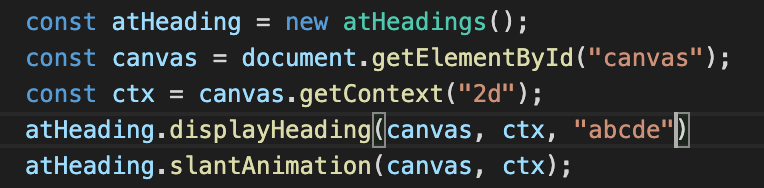
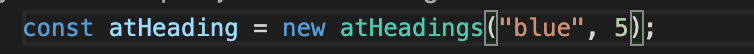
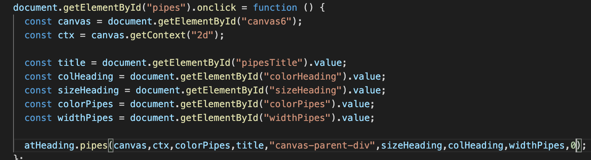
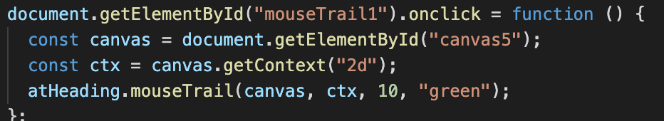
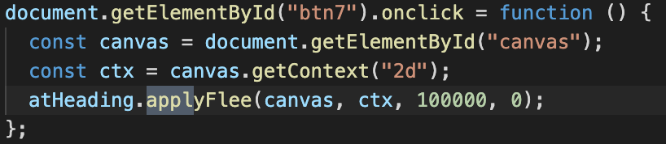
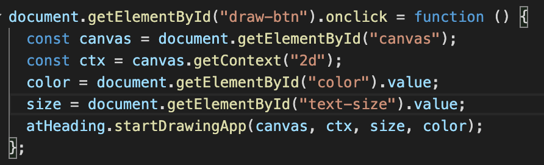

At-Headings.js Documentation 1.0
Written By: Kartik Sangwan
Getting Started
The AT-headings.js is the javascript file where all the code related to
the library is present. Thus to include this library in your project
simply download this file and link it to your html file where you want
to use its features. There is no CSS files that need to linked. The only
other library that AT-Headings.js uses is J-Query which is the second
file that you have to link up. The code is given below:
Basic Usage Code:
-
Create a HTML canvas.
-
Create a new javascript file and add the following 5 lines which
creates a new object of type At-heading and finds the canvas element
and create a “context” required for drawing and animating the canvas
element.
-
Then simply call atHeading.displayHeading(canvas, ctx, title) which
requires a canvas, ctx, and a heading parameter to be displayed on
this canvas.
-
Now accessing say the slant animation is very simple just call the
atHeading.slantAnimation(canvas, ctx) and voila the animation is ready
and running on the canvas specified. All of this in just 5 minutes.
CODE:

Instantiating Objects of At-Headings.js
Use const atHeadings = new atHeadings(color,pointSize); to instantiate
an object of the library. There are two arguments that the constructor
takes two arguments:
Basic Usage :
-
color: the colour of the particles of which the headings is made up
of.
-
pointSize: the size of the particles optimal range (1,10).
-
This is the top-level object that has access to all of the functions
that are required in-order to create all the
animations/backgrounds/mouseTrails and different particles.
CODE:

Functions relating to Headings Display in At-Headings.js
These function are used to draw the particles onto the canvas in many
different ways including changing the shape/size/color look and other
specific properties of the atoms.
Function Definitions :
-
drawMultiple draw methods are available which simply
draw a SINGLE particle object on the ctx at location x, y specified.
In a canvas x pixels is to the right and y pixels down. Note: y
increases as we go down. Functions: draw(ctx, x, y), drawTriangle(),
drawSquareTiles(), drawSquareTilesSeparateFilled() all take the same
arguments. All these have different shapes and sizes that the
developer can use.
-
displayheading(title): is another important function
that creates the required global list of all the atoms both the atoms
and randomAtoms list. Use this function before initialising any
animations.
-
changeColor(newColor): and changeSize(newSize) are
descriptive of their name and change the respective property of the
Heading.
-
displayHeadingBasic(canvas, ctx, title, colour, size):
function allows user to display a basic heading on the canvas
specified. It takes 5 arguments and displays the title on the
corresponding canvas which just has normal text.
-
displayHeadingDynamic (title, headingId):is a
function that uses DOM manipulation to create a spans of single
character that appear from different location and different timings
thus gives a animated effect. The function takes where headingId is
the id of a element (possibly a div of h1) in which the title will be
displayed.
Functions relating to different BackGroundAnimations
These function are used to create dynamic backGrounds which are highly
customizable and different types of headings can also be inserted on top
of the canvas.
Function Definitions :
-
applyBackGround(canvas, ctx, colValue, boxLength, close):function creates a spinning background that consists of boxes
particles of varied length and whose colour differs from any other
particle by slight. This is achieved using hsla() css property. The
colVaue parameter is a a number between 0-360 that indicates rgb
colour schema. boxLengths is the maximum length of the
boxes/particles. close(ideally 10) is a parameter that provides
randomness to the colour so that all the particles have slightly
different colours. if close = 0 then perfect all particles have same
colour as close increase the particles have more drastic colour
changes from the ideal colValue specified.
-
applyBackGroundLines(canvas, ctx, closeValue, colour,
mouseOrNot):
function creates a animation in which the atoms are randomly floating
in the canvas space and if they are close enough specified by the
threshold parameter closeValue(ideally 10), then a line is drawn
between them for that animation frame. Color specifies the colour of
the atoms. mouseOrNot(true/false) parameter specifies the whether the
atoms are reactive to the mouse or not and thus repel the mouse or
not.
-
pipes(canvas, ctx, colorPipes, title, divId, sizeHeading,
colHeading, widthPipes):function is a very interesting one as it creates a very pleasing and
beautiful animation of pipes in the backGround and the title specified
is created on the foreground using DOM manipulation. It is kind of
similar to the windows pipes screensaver modified a bit. title is the
heading to be displayed. divId is the id of the parent div in which
the canvas is so that the heading can be “pasted” on top of the
canvas. sizeHeading is the size of the heading in pixels. colHeading
is a number between 0-360 for the rgb scheme. widthPipes is the width
of the pipes in pixels.
-
createDomHeading(divId, title, size, col):
function can be used to create a h1 heading that can be applied to the
foreground of any canvas, where divId is the id of the parent of the
canvas to which this heading needs be applied.
-
clearHeading(divId):is a can be used to erase the
heading element that was created in point 4 above.
CODE eg for pipes:

Functions relating to different Mouse Trailing Effect
These two functions are used to create some unique mouse trailing
effects like windows mouse trail efect and rainbow mouse trail effect
solely using DOM manipulation.
Function Definitions :
-
mouseTrail(canvas, ctx, radius, color):function
creates a animation in which the atoms follow the mouse pointer when
it is over the canvas specified. The size and colour of the atoms can
be set easily. The animation has about 3 seconds in which all the
atoms are initialised and bounce around after which all of the atoms
disappear that is when the mouseTrail start and user can hover to the
mouse over the canvas to see the effect.
-
mouseTrail2(divId):
Similar to the above mouse trial this one creates a rainbow effect
using purely vanilla javascript and DOM manipulation and thus it is
not fully optimised. However, the effect looks pretty nice. The divId
parameter is where all the rainbow coloured boxed will be added and
and eventListener is added to this divId.
CODE eg for mouseTrail:

Functions relating to different Atomic Animation Effect
These are various functions that can be used in a variety of ways to
produce effects like explosion, atoms repel from mouse, slantAnimation,
scatterAtoms animations and tranforming a heading into another.
Function Definitions :
-
scatterAndComeBack(canvas, ctx, scatterTime):function
is an animation which the particles appear to scatter for scatterTime
amount and then comeBack to their original position that we specified
when the title was created.
-
slantAnimation(canvas, ctx):
function groups treats the full heading title as a single group and
all atoms have velocity in the same direction and change direction
when they bounce off the edges of the canvas. This provides animation
in which the headings particles all move collectively in a group.
-
applyFlee(canvas, ctx, times, opt):
function takes times which is the time duration in ms for which the
animation will take place. In this animation when the use hovers the
mouse near any of the characters of the heading the particles repel
the mouse and when the mouse is far away specified by a threshold
these particles return back to their original place. The opt argument
if 0 all atoms are treated a single entity. If opt is 1 then only the
first character of the heading controls the behaviour of all the rest
of the characters in the heading. So just hovering over the first
character will move/repel all the other atoms.
-
transformHeading(canvas, ctx, h1, h2):
takes two headings h1 and h2 and first display the h1 heading then
after some fixed time scatters all the particles and then the
particles appear to come into the h2 heading formation by converting
the target of the h1 atoms to be the targets of the h2 atoms. It uses
some helper function to achieve the number and order of these tasks .
CODE eg for applyFlee:

Paint Application
This is an extra feature which can be used by developers to create a
white-board for their website if need be. Use Case are websites that
show/explain tutorials or other videos or in meetings e.t.c Another very
important use case of this is web applications that require signatures
for documents/agreements can also use this API and finish it in minutes
!
Function Definitions :
-
startDrawingApp(canvas, ctx, size, color):This is a
basic implementation of the HTML canvas. However it has a wide variety
of uses such as demonstrating any ideas by drawing on the canvas,
explaining tutorial and most importantly signing online documents on
the web. The parameter are just the canvas its context and the size
and colour of the marker that will be used to draw current frame.
-
clearPainting(canvas, ctx):
function clear the whole canvas thus providing a new surface to draw
on when this function is invoked.
CODE eg.:
